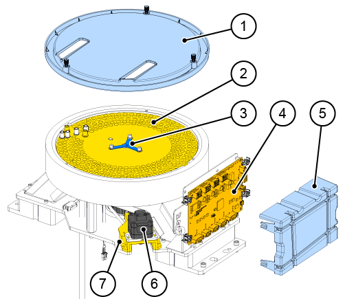
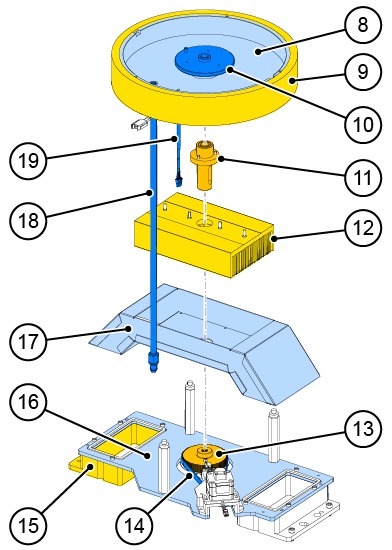
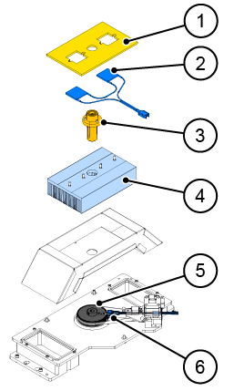
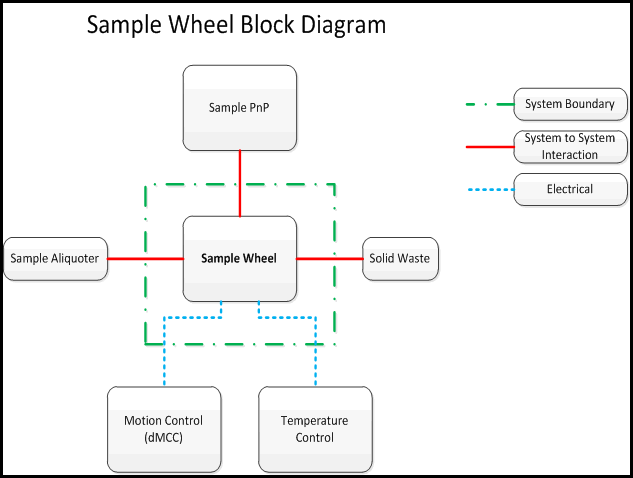

Operating Principles for the Sample Storage Wheel
This topic includes information about the theory of operation, or operating principles, for the sample storage wheel module.
| Table of Contents |
|---|
| Function |
| Location |
| Operational Overview |
| Component Locations and Functions |
| Component and Interaction Block Diagram |
| Interacting and Intersecting Devices |
Function
The purpose of the sample wheel is to function as a storage location for sample material held in sample vessels (SVs), until the system is ready to process the sample in a test. The sample wheel is maintained at a cold temperature (between 4-10C, setpoint 6.5C) to maintain a microclimate of humidity. This stable humidity prevents sample evaporation, which could affect test results.
Location
The sample wheel is located at the left rear of the instrument, beneath the sample pipettors and sample pick-and-place (PnP).

| 1 | Sample storage wheel |
Operational Overview
The sample wheel performs the following functions.
- While in the GREEN (Ready) state, the sample wheel contains empty vessels for samples. To mitigate the risk of condensation, empty vessels can only be kept in the sample wheel for three hours.
- When new sample vessels (SVs) are needed, the sample wheel rotates into position to accept vessels from the sample PnP.
- The aliquot sample pipettor draws sample from the sample container (SPU or LAS).
- The sample wheel rotates into position and the sample pipettor moves to dispense sample into the SV.
- The sample wheel rotates into position for pick-up by the sample PnP for transfers to the reagent shuttle.
- The sample wheel rotates into position for drop-off by the sample PnP during transfers from the reagent shuttle.
- The sample wheel rotates into position for pick-up by the sample PnP and for discarding vessels into the solid waste chute.
Component Locations and Functions

| # | Component | Description and Function |
|---|---|---|
| 1 | Cover | Protects samples in SVs from debris and contamination. Provides containment for maintaining temperature and humidity control of the sample wheel. Includes access slots for the aliquot pipettor and sample PnP. Captive screw locations are positioned to eliminate interference with crossing modules. |
| 2 | Vessel storage plate | Holds SVs. 268 vessel positions, two alignment pin positions;
|
| 3 | Ground triangle | Provides a ground path from the vessel storage plate to the drive assembly driveshaft. |
| 4 | D7 dMCC | Using 58V, powers the sample wheel motor and relays sensor data and motor commands to and from the sample wheel module to the system software. The dMCC on the sample wheel is designated D7 as seen by dMCC mount bracket. |
| 5 | dMCC cover | The cover for the D7 dMCC |
| 6 | Motor/encoder | The stepper motor that drives the belt to turn the sample wheel |
| 7 | "Starfighter" bracket | Used to mount the motor to the sample wheel assembly and tension the drive belt. Contains the pocket for the compression spring. Can be removed from the baseplate for easy maintenance of the motor and belt. |

| # | Component | Description and Function |
|---|---|---|
| 8 | Housing | The main body of the sample wheel. Acts as a basin for holding condensed water to maintain humidity. Aluminum. |
| 9 | Housing insulation | Insulates the sample wheel housing for better temperature stability. Cutouts allow access to thermistor position, drain tube connection, standoff threads, and heat transfer surfaces. |
| 10 | Drive assembly | Transfers motion from the pulley to the sample vessel storage plate. |
| 11 | Bearing assembly | Locates the drive assembly in relation to the housing and allows for free movement of the driveshaft. Vents on the sides allow for airflow through the heatsink. |
| 12 | Heatsink | Transfers heat from the hot side of the peltier to the chassis airflow. |
| 13 | Pulley | Made to Gates GT2, 2mm pitch standard; 120 grooves; maintains a 10:1 drive ratio to motor pulley |
| 14 | Belt | Rotates the pulley and drive assembly. Conductive for ground path. Gates GT2 2mm pitch. |
| 15 | Riser (1 of 2) | Elevates the sample wheel to the correct height in the instrument. The same riser is used on both sides of the sample wheel for parts reduction. Will be eliminated when cast riser and baseplate is implemented. |
| 16 | Base plate | Source of attachment point for all components. |
| 17 | Air duct | Provides an airflow path from the chassis air duct through the heatsink. |
| 18 | Drain tube | Removes excess water from the housing. |
| 19 | Thermistor | Monitors the sample wheel housing temperature for system monitoring. Provides temperature to the peltier power control PID feedback loop. |

| # | Component | Description and Function |
|---|---|---|
| 1 | Insulation pad | Surrounds the chilled area to help maintain temperature. |
| 2 | Peltier | Provide thermoelectric cooling for chilling the sample wheel housing. |
| 3 | Driveshaft bearing | Locates the drive assembly in relation to the housing and allows for free movement of the driveshaft. Vents on the sides allow for airflow through the heatsink. |
| 4 | Heatsink | Transfers heat from the hot side of peltier to the chassis airflow. |
| 5 | Driven pulley | Made to Gates GT2, 2mm pitch standard; 120 grooves; maintains a 10:1 drive ratio to motor pulley |
| 6 | Home sensor | Locates the home position |
| Component | Description and Function |
|---|---|
| Motor Mount | Attaches to the motor. Slides along the top of the "Starfighter"/tensioner for positioning the motor during belt tensioning. |
| Pulley Flange | Added measure to ensure the belt stays on the pulley during installation. |
| Temperature Control PCB (T5) | Monitors the sample wheel housing temperature for system monitoring. Provides temperature to the peltier power control PID feedback loop. See Electronics Locations and Reference Diagrams for more information. |
Component and Interaction Block Diagram

Interacting and Intersecting Devices
- Aliquot Sample Pipettor
- Sample Pick and Place (PnP)
- Solid Waste (condensation drains from sample wheel into waste bin)